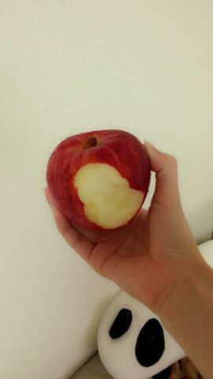

りんご。

ロティりんご。 )))
皆 今日もお疲れさまぁ〜\( ・∇・) /
これ こないだの青森の林檎さん。
今日 頂いた ！
かぶりついた後で
ごめんなさいね〜(*´ω｀*)
とっても甘くておいちかったよん。
今は お風呂もあがって
やっと リラックスモード。
帰りに スーパーで
牛乳とお水も忘れず買って帰れたし
よかったよ、ほんと^^あは.
もちろん アイスも \(・ω・)/
あっ、ちなみに今日は明日の
氣志團万博のリハーサルを
やってきました！
今年は 私達、乃木坂46を呼んでいただき
本当に嬉しいです！
ありがとうございます☆！
色々なアーティストさん等が来る中、
乃木坂46も 負けじと会場を熱く
盛り上げて行きたいと思っています★
皆さん！
初めましての方もいっぱい
いらっしゃると思いますが
よろしくお願いします ！！
今日は 久々美容院にも行けて
髪の毛 トゥルントゥルン ♪
にしてもらったことやし
気合い入れて行こかっ (/〃ω〃)/
ではではっ、
まったねーーーん♪
皆 明日も１日頑張ろうね p(^-^)q
おやすみなさい...。